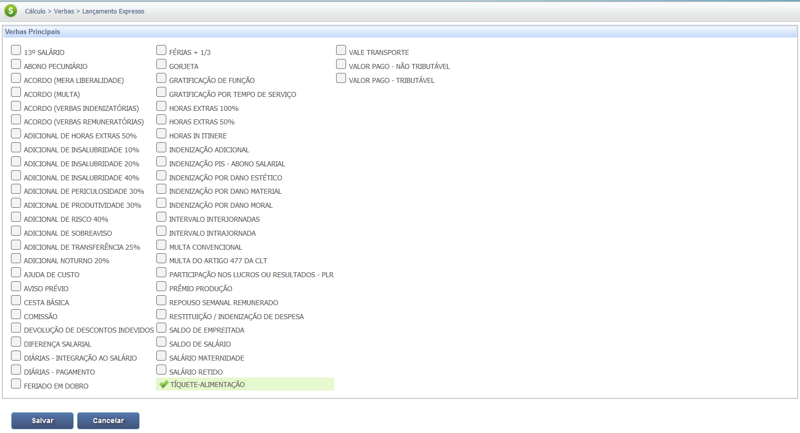
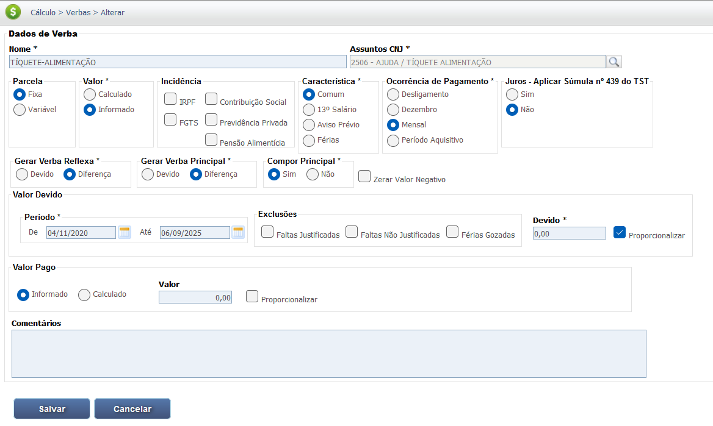
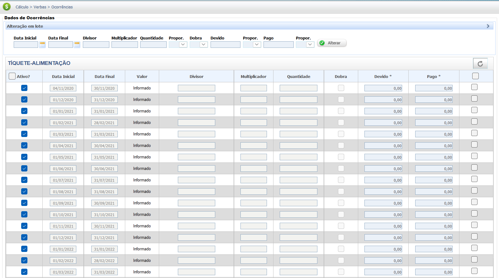

Auxílio Alimentação Trabalhista
O Auxílio Alimentação, também conhecido como vale-refeição ou vale-alimentação, é uma parcela paga pelo empregador para custear a alimentação do trabalhador. Sua natureza jurídica (salarial ou indenizatória) depende da forma de concessão e da adesão ao Programa de Alimentação do Trabalhador (PAT).
Natureza Jurídica (Auxílio Alimentação)
1. Natureza Indenizável (Regra Atual)
Conforme Art. 457, §2º da CLT e Lei 14.442/2022. Não integra a remuneração, não gera encargos e nem reflexos.
- Adesão ao PAT (Programa de Alimentação do Trabalhador)
- Natureza mantida mesmo se pago em dinheiro, após a Lei 14.442/2022.
2. Natureza Salarial (Exceção/Jurisprudência Antiga)
Aplica-se em casos de descaracterização (não adesão ao PAT antes da reforma) ou por força de Súmula 241 TST (se fornecido gratuitamente).
- Pago Habitualmente e Sem Desconto do Empregado.
- Acórdãos que aplicam legislação anterior à Reforma/MP 1.108.
Aspectos Fundamentais do Auxílio Alimentação:
A principal distinção no cálculo é se o Auxílio Alimentação possui natureza salarial ou indenizatória.
- Indenizatório: Não há reflexos em nenhuma verba acessória e nem incidência de INSS e IRRF.
- Salarial (por descaracterização): O valor integra a remuneração para todos os fins.
Base Legal e Jurisprudência
O regime jurídico do Auxílio Alimentação tem por base a legislação a seguir, com destaque para a consolidação de sua natureza indenizatória:
Fontes Normativas
Consolidação das Leis do Trabalho (CLT):
-
Art. 457, §2º da CLT:
"Não se incluem nos salários as ajudas de custo, o auxílio-alimentação, vedado seu pagamento em dinheiro, as diárias para viagem, os prêmios e os abonos."
Lei nº 6.321/76 (Programa de Alimentação do Trabalhador - PAT):
-
Art. 3º, caput:
Estabelece que a parcela in natura ou paga por meio de instrumentos para fins do PAT não tem natureza salarial.
Lei nº 14.442/2022 (Regulamentação do PAT):
-
Art. 1º:
"O auxílio-alimentação de que trata o § 2º do art. 457 da Consolidação das Leis do Trabalho, aprovada pelo Decreto-Lei nº 5.452, de 1º de maio de 1943, deverá ser utilizado exclusivamente para o pagamento de refeições em restaurantes e estabelecimentos congêneres ou para a aquisição de gêneros alimentícios em estabelecimentos comerciais."
Jurisprudência
Natureza Salarial (Casos Anteriores)
Súmula nº 241 do TST:
"O vale-refeição fornecido por força do contrato de trabalho, por liberalidade ou por norma coletiva, não integra o salário do empregado, exceto se fornecido gratuitamente em período anterior à vigência das Leis nº 13.467/2017 e 14.442/2022."
*(Nota: Precedente aplicável para fins de cálculo de reflexos salariais em períodos anteriores aos marcos legais de 2017 e 2022, caso houvesse descaracterização.)*
Base de Cálculo e Deduções
O Auxílio Alimentação, se mantida sua natureza indenizatória, não integra a base de cálculo de nenhuma verba (salário, férias, 13º, FGTS). Bem como não tem incidência de INSS e IRRF.
Cálculo de Verba Descaracterizada (Hipótese de Integração Salarial)
Apenas se houver decisão judicial transitada em julgado reconhecendo sua natureza salarial (geralmente por aplicação de lei anterior ou descaracterização), o valor do Auxílio Alimentação integrará o cálculo:
- Da Remuneração Mensal.
- Passa a incidir INSS e IRRF sobre a parcela, devendo ser calculados os recolhimentos correspondentes.
Dedução:
É comum o empregador descontar uma pequena porcentagem do Auxílio Alimentação (conforme o PAT), e este valor deve ser deduzido do total devido na fase de cálculos.
Verbas Reflexas
O Auxílio Alimentação por possuir de regra natureza indenizatória não integra a base de cálculo de nenhuma outra verba.
A condenação de Auxílio Alimentação como verba salarial (situação excepcional) gera reflexos sobre as verbas acessórias devidas ao empregado, retroativamente, pelo princípio da habitualidade.Reflexos Comuns (em caso de integração salarial)
1. 13º Salário:
O valor mensal do Auxílio Alimentação, se salarial, deve integrar o cálculo do 13º salário, na proporção de 1/12 por mês.
2. Férias e Terço Constitucional:
O valor salarial do Auxílio Alimentação deve compor a base de cálculo para as férias e o adicional de 1/3.
3. FGTS (Fundo de Garantia por Tempo de Serviço):
Se reconhecida a natureza salarial, o empregador deverá recolher o FGTS (8%) sobre o valor mensal do auxílio.
Calculadora (Simulação)
Esta seção seria utilizada para simular os reflexos salariais do Auxílio Alimentação em casos de descaracterização.
Ferramenta de Simulação para Reflexos do Auxílio Alimentação não implementada.
O cálculo depende de critérios temporais e do valor mensal, sendo mais simples que o Dano Moral/Patrimonial, mas exige a aplicação do percentual de integração sobre 13º e Férias.
Lançamento no PJe-Calc
A seguir, confira o passo a passo para o lançamento da verba no PJe-Calc, utilizando a opção "Expresso":
-
Acessar Verbas e Escolher Lançamento: No menu de
navegação à esquerda, clique na opção Verbas para iniciar o lançamento. Após o
comando,
será exibida a tela para escolha do Lançamento da Verba. Escolha a opção Expresso.

- Seleção da Verba: O sistema abrirá as opções de verbas, escolha a verba Auxílio Alimentação e clique no botão Salvar 
-
Quadro de Verbas e Ações: O sistema exibirá um quadro
com os campos:
- Ações - contendo as opções de configurações da verba selecionada (parâmetros,
ocorrências e
exclusão)

-
- Parâmetros da Verba

-
- Ocorrências da Verba

-
- Excluir

- Verba Principal - verba selecionada para lançamento.
- Verba Reflexa - em que ao clicar no botão Exibir serão listadas todas as verbas reflexas ligadas a Verba Principal.
- Parametrização da Verba: Ao clicar no botão Parâmetros da Verba serão exibidas todas as configurações necessárias para a parametrização da Verba Principal. 
- Registro de Ocorrências: Ao clicar no botão Ocorrências da Verba serão exibidas todas as configurações necessárias para registro das ocorrências da Verba Principal. 